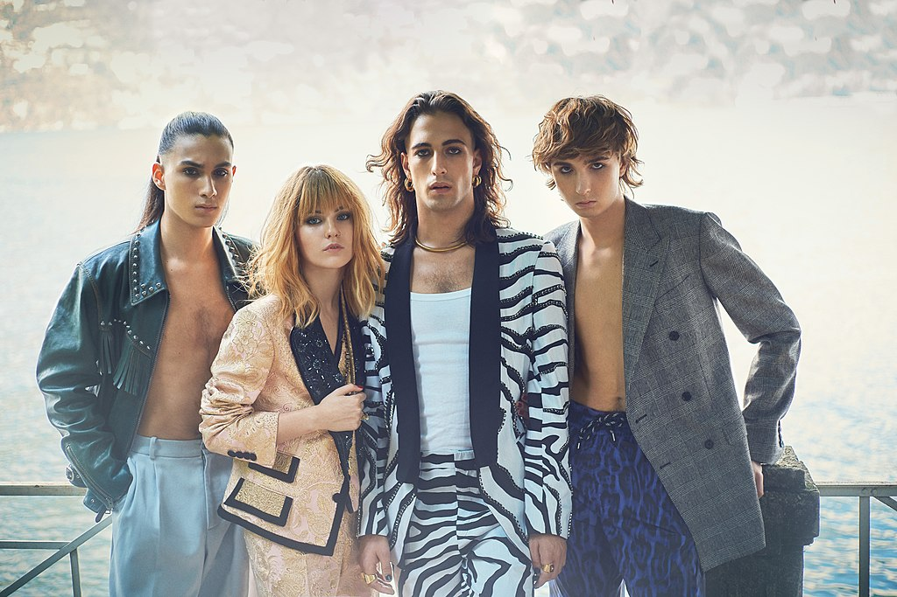

Måneskin
Måneskin band members, from left to right: Ethan Torchio, Victoria De Angelis, Damiano David and Thomas Raggi. Image source: Måneskin, CC BY-SA 4.0 via Wikimedia Commons
{kind=link}
Who is Måneskin?
Måneskin is a world-renowned Italian rock band first formed in Rome, Italy, in 2016. Their music is often classified as pop rock, hard rock, and alternative rock. Måneskin gained international recognition after winning the Eurovision Song Contest in 2021, representing Italy. Since then, Måneskin has become an internationally-acclaimed band, performing in and selling-out arenas worldwide.
Måneskin, unlike many bands, has a beautiful and diverse range of music they can play. From ballads to hard-core rock, Måneskin is able to make every song they play captivating and energetic. On stage, they have a powerful and open stage presence; they know how to draw in and interact with a crowd, no matter how big or small they may be.
As a band, Måneskin encourages fans to be unapologetically themselves, regardless of what others may think. They are known for their unique and daring fashion styles, which commonly break gender and societal norms. Although a new band, Måneskin has become a world-wide sensation and an example for individuals across the globe.
Music Sampler
Click on the album covers below to listen to some of their music.
The Loneliest

Zitti e buoni

Il ballo della vita

Beggin'